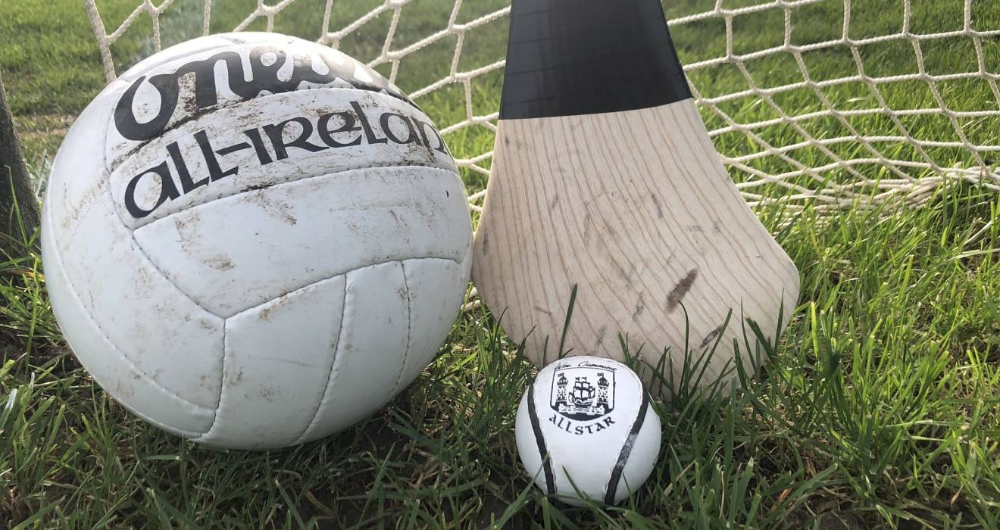
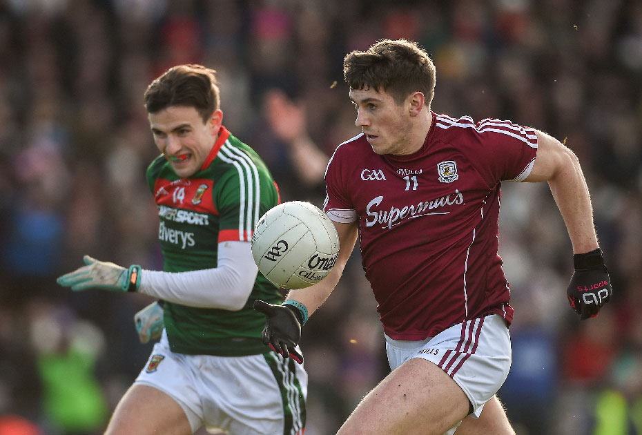
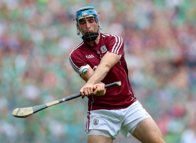

Irlanda siempre ha destacado por ser un país lleno de singularidades, no sólo en el tiempo, la naturaleza, sus tradiciones o leyendas, sino también por el deporte. El deporte dominante no es el futbol inglés, el baloncesto o el tenis; los deporte dominantes en la isla de San Patricio son el Futbol Gaélico y el Hurling.
Algunos de los ciudadanos de la isla estaban preocupados por la extinción de estos dos deportes, esto se debía a la creciente popularidad de los deportes británicos como el futbol o el rugby pero influyó en gran medida el fuerte nacionalismo irlandés que había resurgido con gran fuerza tras la Gran Hambruna y eso provocó que estos dos deportes prevalecieran sobre los demás.
El futbol gaelico es una mezcla entre el futbol, el balonmano y el rugby, por eso se puede patear la pelota con la pierna, cogerla con las manos y poder realizar placajes pero no tan bruscos como en el rugby. Hay muchas diferencias con el futbol que todos conocemos, el del Barça, el Madrid o el Atl..Liverpool.

Empezando por el terreno de juego, que tiene una longitud de unos 130 a 145 metros de largo por 90 metros de ancho, habiendo una portería en cada lado con forma de H, con una red en la parte inferior como si fuera una portería de fútbol y la parte superior parecida a la portería de rugby; y en el que jugar 11 contra 11 se les haría el partido muy largo; por eso en el fútbol gaélico juegan 15 contra 15.
Su campeonato, el All-Ireland Senior Championships, es el evento más grande del año en Irlanda, de hecho sus partidos finales sé disputan el Croke Park de Dublín, uno de los estadios más grandes de Europa con capacidad para 80.000 espectadores.
Las reglas que debes saber para poder practicar este deporte son las siguientes:
Hoy en día podemos ver como muchos deportes se van «ensuciando» poco a poco debido al dinero que hay en medio, muchos no sienten el escudo, sino que juegan por dinero. Aquí en Irlanda todo es diferente; ningún jugador recibe dinero a cambio de jugar, es más, poder jugar para su condado es un honor y un orgullo para ellos.
Algo llamativo en la historia de este deporte es que fue prohibido en el siglo XIII debido a su gran violencia en el terreno de juego. Pero en 1884 la Asociación Atlética Gaélica, encargada de organizar y administrar este deporte, organizó el primer campeonato nacional de Irlanda.
Su intensidad, ritmo y velocidad en el juego, lo convierten en el deporte más rápido del mundo. Para que os podáis hacer una idea, es similar al hockey y se juega con un stick llamado hurl y una pelota de un tamaño bastante pequeño llamada sliotar. De este juego existe también una versión femenina llamada “camogie”. En cuanto al terreno de juego, los equipos y la duración, es el mismo que en el fútbol gaélico, también juegan 11 contra 11 y el partido se divide en dos partes de 35 minutos cada una.

Como he dicho anteriormente, es un deporte rápido y con bastante contacto físico, así que los jugadores están bien preparados para recibir o dar golpes durante el partido, aunque siempre con el equipo correcto para reducir las posibilidades de lesiones. El equipamiento cuenta con casco, protección bucal, sliotar, hurley.
Otra diferencia es la duración de los partidos. Al ser un campo muy grande y tener que estar siempre en continuo movimiento, los tiempos no son excesivamente largos, se juega dos partes de 35 minutos cada una.
En cuanto a la puntuación es totalmente distinta a los demás deportes, se podría decir que en el futbol gaélico hay dos resultados por equipo, un resultado se utiliza para cuando un jugador anota por encima del travesaño contando como un punto y si pasa por debajo se anote un gol equivalente a tres puntos. La portería estará siempre protegida por el portero. Al finalizar el partido se hace la suma de estos dos resultados de cada equipo y quien haya obtenido más, es el vencedor del encuentro.
También es necesario tomar nota de unas cuantas reglas para poder jugar a este hermoso deporte:
La principal competición del hurling es la All-Ireland Championship, que es disputada por equipos de los diferentes condados de la República de Irlanda, así como los procedentes de Irlanda del Norte, a los que se suman en esta competición un equipo de Londres y otro de Nueva York, de manera que este campeonato adquiere un matiz internacional. La final, como en el fútbol gaélico, se disputa cada año en el Croke Park.